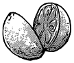

[ DR STONE ]
SENKU COLA
Si vous vous retrouviez propulsé à l'âge de pierre, quel serait votre voeu le plus cher? Quelle part de la civilisation humaine souhaiteriez-vous re-obtenir?
Pour certains individus cette réponse serait... le cola ! Impossible à faire? Et bien en réalité, la préparation est extrêmement simple bien qu'elle ne soit apparu qu'aux 19e siècle ! Avec cette recette vous allez devenir un vrai petit scientifique et vous ravir les papilles ! (Et puis c’est plus facile que de faire des antibiotiques et des téléphones...)
 |
 |
 | |
| CORIANDRE | CARAMEL FAIT ÀBASE DE MIEL CUIT | EAU GAZEUSE | CITRON(MÊME L'ECORCE) |
Juste en ajoutant de la coriandre écrasée avec de l'écorce de citron pressé... on obtient la saveur du cola ! Ensuite il suffit de tout mélanger. Bien sûr tous ces ingrédients se récupèrent facilement, il ne faut jamais oublier que toutes les composées chimiques que nous connaissons sont à la base naturelle, avant de devenir des transformations !
Encore une grande victoire pour le royaume de la science ! (C'était rapide...)
« JPP c'est le meilleur truc
que j'ai bu de ma vie »
que j'ai bu de ma vie »
★★★★